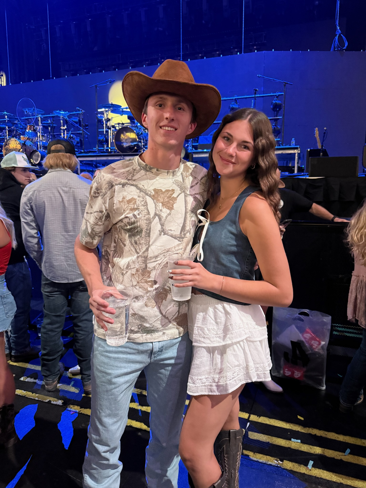
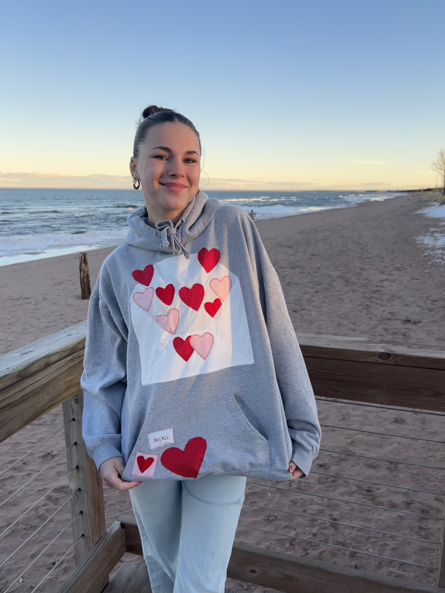

Welcome!
Hi, my name is Addy Bordthauser, and I’m a sophomore at the University of Minnesota Duluth, majoring in Marketing. I am passionate about creativity, communication, and building connections, which I express through both my studies and experiences. At UMD, I’ve been able to grow both personally and professionally by engaging with the community, learning from peers, and developing skills that will prepare me for a future career in marketing. I’m excited to continue exploring opportunities where I can combine my interests in creativity, storytelling, and strategy to make an impact.
A short welcome video introducing myself to visitors.
My Hobbies at a Glance
Country Concerts
I absolutely love going to country concerts—it’s one of my favorite ways to spend time with friends and enjoy music. So far, I’ve been to six concerts, and each one has been such a fun and memorable experience. Being surrounded by live music, great energy, and a crowd that loves country as much as I do makes it so special.
Sewing Patchwork Hoodies
Another big hobby of mine is sewing! I especially enjoy making patchwork hoodies. I started sewing a few years ago, and since then, it has become something I’m really proud of. I love experimenting with colors and fabrics, and it’s so rewarding to see my finished projects come to life. I even sell some of my hoodies to family and friends, which makes the hobby even more meaningful.